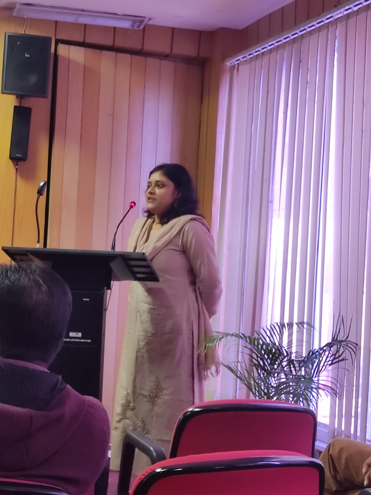

pallabi19c2013@gmail.com
Phd Student (Economics),
Department of Humanities and Social Sciences,
Indian Institute of Technology, Guwahati.
I am a PhD student of Economics at the Department of Humanities and Social Sciences, Indian Institute of Technology, Guwahati. I have submitted my PhD thesis and am now awaiting defense. I obtained my MA in Economics from Banaras Hindu University (BHU) and BA in economics from Cotton University. My research interests are development economics, political economy, applied micro-econometrics and game theory.